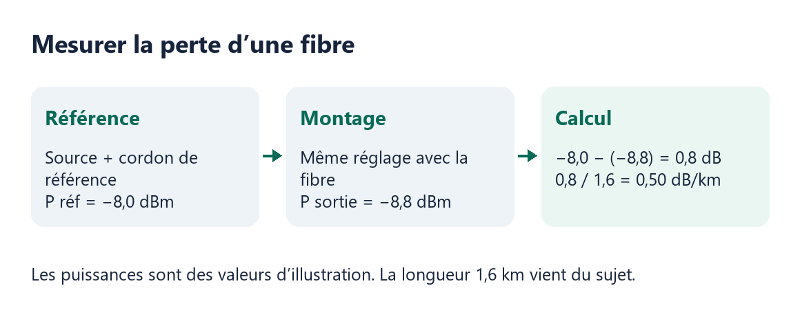
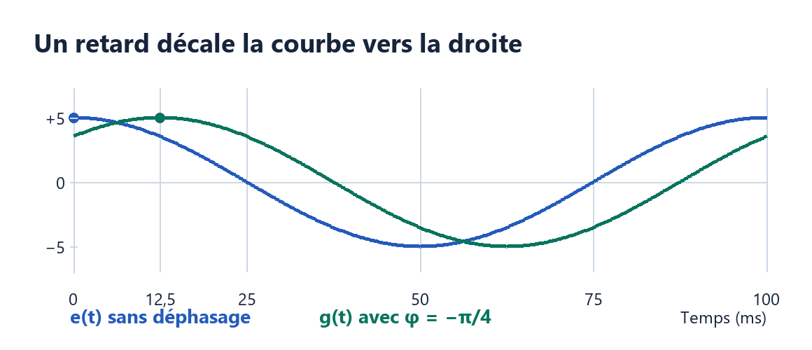

Comprendre le cours
Mesurer une propagation dans un câble coaxial
Pour un délai d’aller simple Δt, utilise L = vΔt. Pour le retour d’un écho, utilise L = vΔt/2. Exprime v en m/s et Δt en secondes.
Une différence d’impédance crée généralement une réflexion. Compare une extrémité ouverte à une charge adaptée à l’impédance du câble. Garde le même réglage de mesure pour comparer.

Mesurer l’atténuation en coaxial et en fibre
Le dBm exprime une puissance référencée à 1 mW. Le dB exprime un rapport. Une perte positive est l’opposé du gain en dB. Les pertes de connexion du montage peuvent s’ajouter à celle de la fibre.
Référence le photomètre avec la source et le cordon avant d’insérer la fibre. Choisis la même longueur d’onde pour la référence et la mesure. La quantité calculée en dB/km est une estimation si des pertes de connecteurs restent incluses.
Lire amplitude, fréquence, phase et offset
Pour une sinusoïde centrée, la valeur efficace est |A|/√2. Elle correspond à la tension continue qui dissiperait la même puissance dans une résistance. Avec un offset, elle devient √(C² + A²/2) puisque la moyenne du terme croisé est nulle sur une période entière.
Pour g(t)=e(t−τ), développe l’argument en ωt−ωτ. On identifie φ=−ωτ, à un tour près. Le déphasage seul ne distingue pas des retards séparés d’un multiple de la période.

Du cours aux TD et TP
Le diaporama original de la séance NE1 est disponible. Les questions GeoGebra sont reconstituées depuis le compte rendu NE2. Les mesures illustratives sont indiquées comme telles.
Questions TD & TP
NE1 · Déduire la longueur d’un coaxial à partir du retard
Énoncé reformulé. Dans la simulation, relever les deux instants, puis déduire le temps de propagation et la longueur de ligne.
- Calcule
Δt = 3,00 − 0,25 = 2,75 µs. Transforme en2,75 × 10⁻⁶ s. - Utilise
v ≈ 2 × 10⁸ m/s, soit environ 200 000 km/s. Le résultat est2 × 10⁸ × 2,75 × 10⁻⁶ = 550 m. Cette conversion corrige une coquille du support. - Sur la mesure expérimentale, applique les mêmes étapes à tes propres curseurs. Vérifie si tu mesures un aller ou un écho.
NE1 · Déterminer l’atténuation de la fibre de 1,6 km
Énoncé reformulé. Calculer l’atténuation de la fibre G657 de 1,6 km et l’atténuation par kilomètre, puis répéter à une deuxième longueur d’onde.
- Relève la longueur d’onde affichée et établis la référence. Insère la fibre avec les mêmes réglages et relève la puissance reçue.
- Soustrais la lecture de sortie à la lecture de référence. Divise le résultat par 1,6 km. Garde les unités à chaque étape.
- Établis une nouvelle référence pour l’autre longueur d’onde. Compare les pertes obtenues en indiquant l’incertitude et les connexions incluses dans le trajet.
NE2 · Calculer la période, le retard et la valeur efficace
Énoncé reformulé. À partir de 5 cos(4t), trouver la période. Pour une sinusoïde à 10 Hz et de phase −π/4, trouver le retard et vérifier la moyenne et la valeur efficace.
- Affiche
5 cos(4t)et mesure l’écart entre deux maxima. On attendπ/2 set une fréquence de2/π ≈ 0,637 Hz. - Trace
5 cos(20πt)et5 cos(20πt−π/4). Le retard vaut(π/4)/(20π)=0,0125 s. Une phase positive dans cette convention aurait avancé le signal. - Sur une période, vérifie une moyenne de 0 et une valeur efficace de
5/√2 ≈ 3,54. Ajoute un offset pour vérifier qu’il devient la nouvelle moyenne.